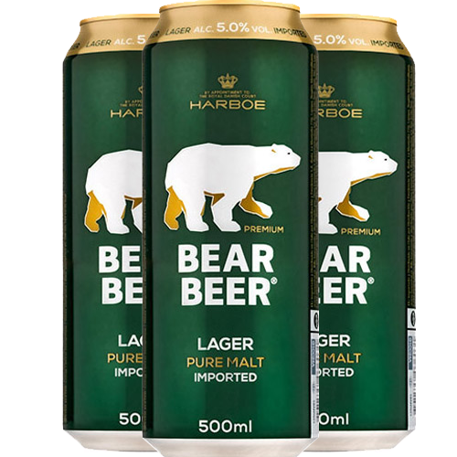
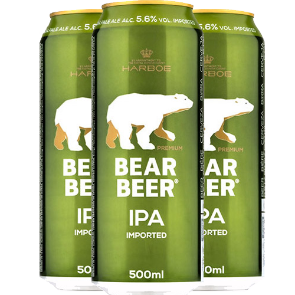

LAGER
PURE MALT
Las Lager son las cervezas más populares en Europa occidental; normalmente son cervezas claras, para servirse frías con una alta drinkability. Dentro de las Lager podemos encontrar tres subtipos principales: la Pilsen, la Lager especial y la Lager extra.

IPA
PALE ALE
Las cervezas Pale Ale son uno de los tipos de cerveza más de moda actualmente. Son las cervezas Ale más pálidas (de ahí su nombre). No obstante, son cervezas muy lupuladas y de intenso sabor (algunas pueden llegar a ser bastante amargas).

WHEAT
ABADIA
Una cerveza de color bronceado con una espuma ligeramente tostada y con mucha persistencia. Un aroma afrutado con notas a caramelo. Este tipo suele tener una graduación alrededor de los 6º y en boca se presenta muy sabrosa y seca.